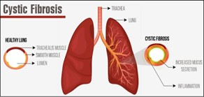

Cystic Fibrosis
General Information
Cystic fibrosis is a progressive, genetic disease that causes persistent lung infections and limits the ability to breathe over time. Children with CF also suffer from digestive problems that prevent the body from breaking down and absorbing food, leading to inadequate growth and nutrition.
Illustration

Management Basics
- Maintaining normal weight is very important, as it has been shown to be linked to lung health.
- Take in adequate calories. Sometimes feeding tubes are necessary.
- You may also need to take in more salt, especially if you are sweating. An appropriate enzyme and vitamin dose is also very important in the management of CF.
- Perform daily airway clearance therapy (ACT) and you may need to use inhaled medications or even antibiotics when necessary.
- Exercise and stay active for your lung health.
- Treat any respiratory tract infections are treated promptly.
- If you think you have an infection, call your doctor, so you can receive medication.